Mount Triumph
Northeast Ridge (5.7)
July 19-20, 2003
<font size=+5>I had long wanted </font> to climb the Northeast Ridge of Mt. Triumph, which had all the elements of a great Cascades climb: scenery, a glacier approach and a steep ridge climb. Despite just returning from a climbing trip to Colorado, Theron was immediately up for the challenge. He wrote about the story on his site.
We took a 50 meter 8.5 mm rope which we doubled for the rock climbing. I had a new 40 degree summer bag and was pleased as punch at how small it compacted in my pack. We took rock shoes, a small rack of gear (I decided to leave out the #3 Camalot required for the wide crack and just run it out), crampons and ice axes. I carried a bivy sack, but convinced Theron to leave his - “No way it’s gonna rain!” We carried lightweight rain shells, me going so far as to use a $10.00 shell that compresses to the size of my fist.
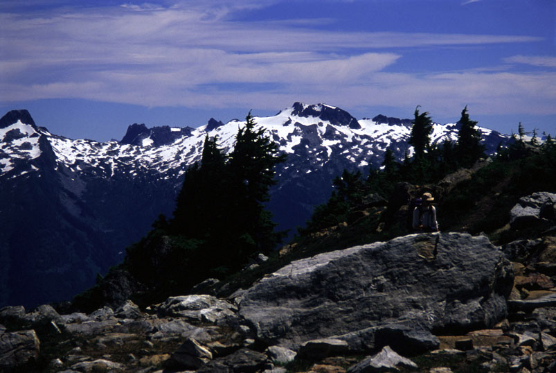
Just below the high pass next to the glacier. This was a very scenic spot with the Thornton Lakes below.
We talked and sometimes listened to music on our Rios on the way up. It seemed to take a long time to reach the slope above Thornton Lakes, but a great view there gave us more energy. We made an error by continuing past the outlet of the 2nd lake (you are supposed to cross here), and following a sketchy trail that led to a 5th class traverse of cliffs above the 2nd lake. Oops! We ate lunch where the stream from the 3rd lake enters the 2nd, then climbed tedious scree, boulder and heather slopes towards our high pass, eventually intersecting a climbers trail. We were agog at the view of the Picket Range and our objective from the pass.
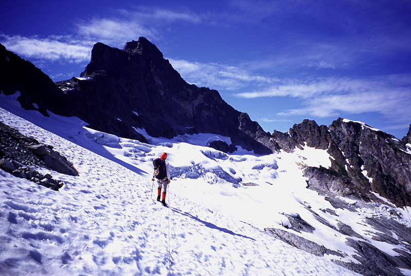
Theron is ready to cross the glacier. Our camp is just left of the low notch on the ridge, and our route follows the ridge up and left to the summit of Mt. Triumph.
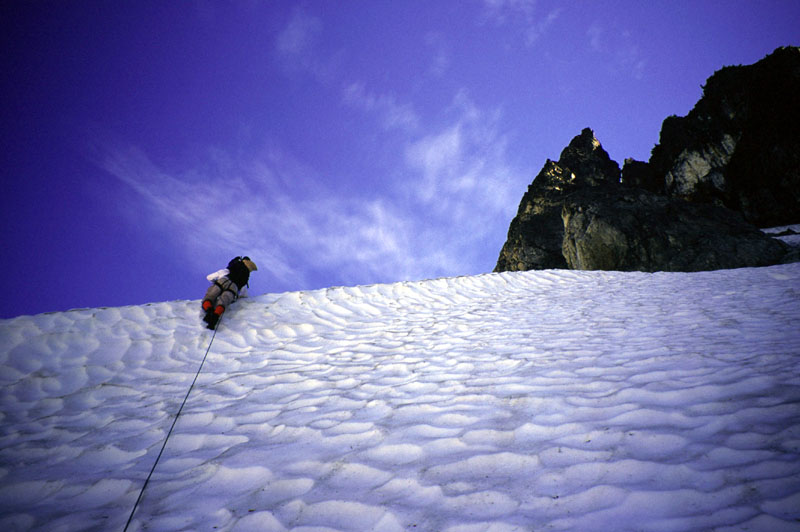
But first we had a section of steep, hard snow to climb down. We were glad to have crampons for this section.
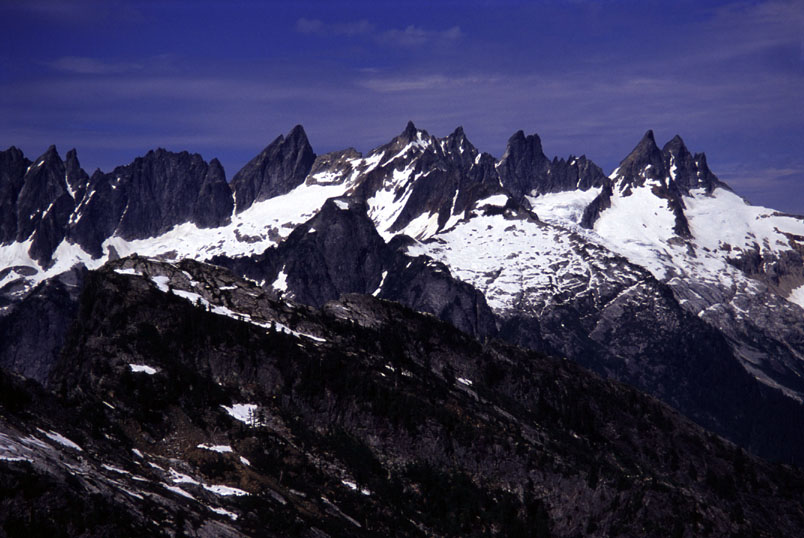
The stupendous view of the Southern Pickets from the pass.
We climbed two pitches on the ridge to reach our bivy site, having great fun designating the cooking ledges, the sleeping platform, the equipment storage locker. We had it all to ourselves, which I thought was unusual for a summer weekend. Perhaps everyone knew the weather would change?
The stove didn’t work very well for a while, and my dinner was undercooked. I was depressed about it, but Theron’s advice to add more hot water and heating time did the trick. Yay - no calorie deficit! When sunset finally came after hours of lounging and speculating about routes, Theron sprung to life with his camera. Orange then pink snowfields and ridges fascinated us until full dark. I listened to the “Das Boot” soundtrack, which dramatized our lonely camp in the sky.
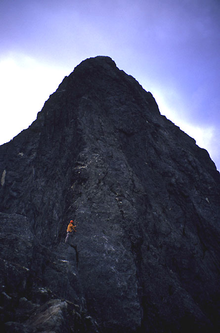
The next morning we climbed despite grim clouds. Theron makes his way up on a long simul-climbing pitch.
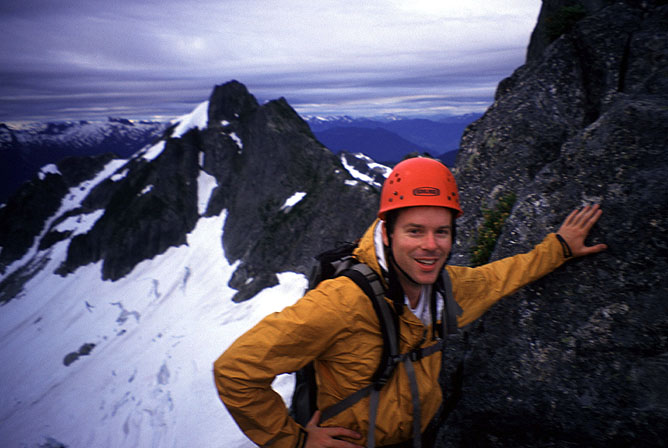
A blurry Theron in the morning.
At 4 am we awoke to raindrops, somewhat horrified because Theron had no cover for his sleeping bag. Feeling guilty, I worked to cover his bag with our shells. He was too sleepy to care. Anyway, the rain stopped after 15 minutes, and with a bit of wind everything was soon dry. We started climbing at about 6:30 am.
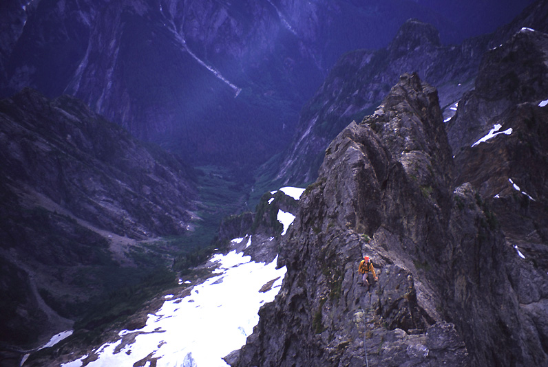
The ridge fell away steeply on both sides. This was taken from near the wide crack pitch.
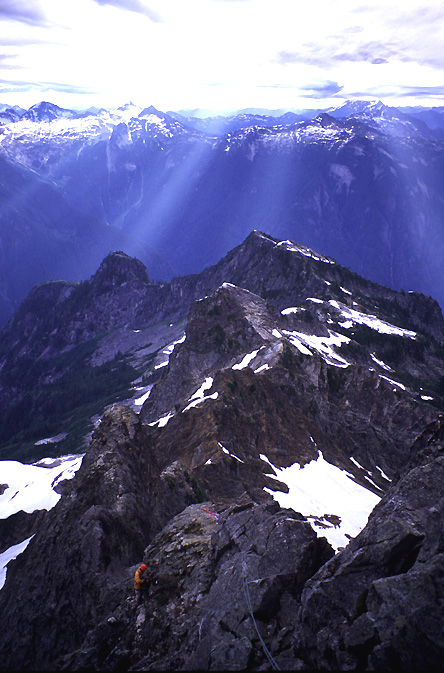
A similar shot, but I liked the godbeams.
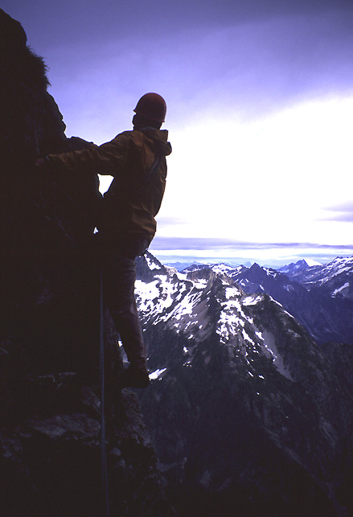
After the wide crack, we climbed down into the Great Notch, and steeply out of it on the right side of the ridge.
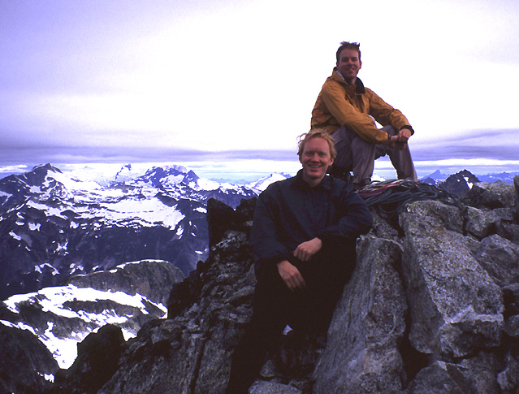
On the summit! 1 hour 30 minutes after leaving camp.
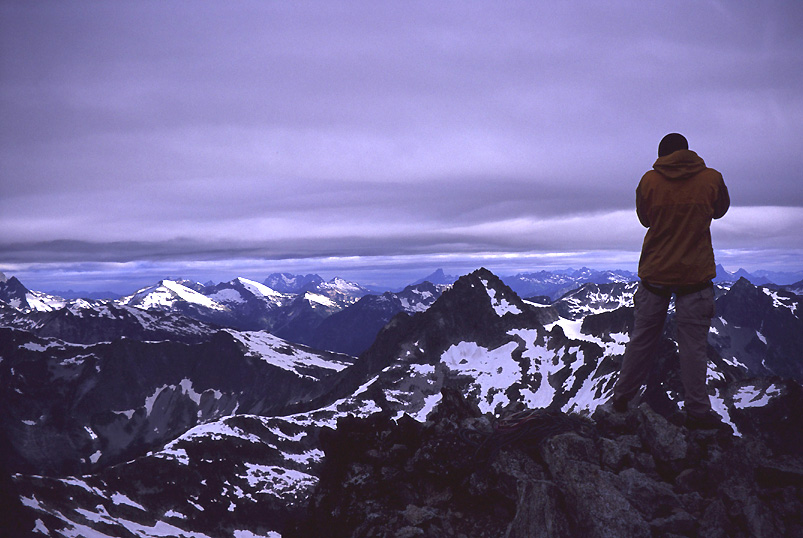
The clouds were lowering rapidly. Still, they provided a lonely alpine ambience. I still couldn't believe we had the climb to ourselves.
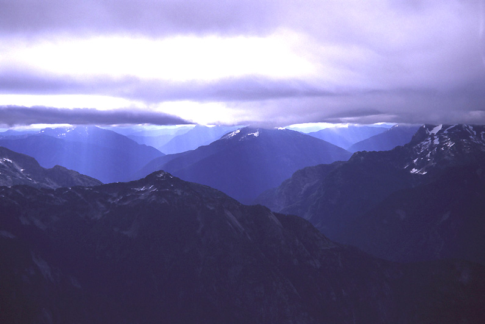
Fast moving clouds on the summit.
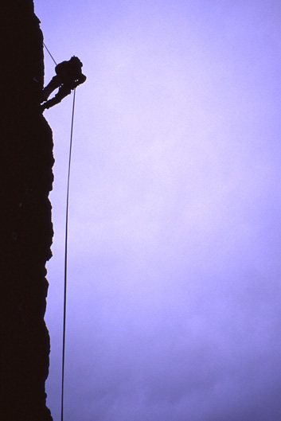
Theron rappels into the Great Notch.
A few more rappels got us and our bivy gear down to the glacier. Clouds had enveloped the summit, causing us to lose our motivation to climb Thornton Peak on our way out. By the time we hiked down to Thornton Lakes, the sun was back out, and we cursed it on the hot brushy trail!
Listening to music on the way out, we made good time to the car and were driving away by 5:30 pm. We went to the park visitor center to get a final view of the Pickets. The Chopping Block looks great from there!
Notes:
Scrambled up solid but exposed 5th class ledges from glacier (off route). Joined hiking route to notch.
pitch 1: from notch in ridge up 25 meters to bigger notch (M)
pitch 2: fun 5.5 lieback up slabs that led to bivy ledge. (M)
pitch 3: Long simulclimb up gully left of crest, to 3rd class walking. Around and over towers to a belay at the end of a stunning knife edge. (T)
pitch 4: Simulclimb from here over a tower then up the “5.7 wide crack” mentioned in guidebooks. 2 nut belay at the top of the crack. (M)
pitch 5: up a fun friction slab, around a corner, then down into the Great Notch. (T)
pitch 6: Exciting, steep climbing out of the notch and on to the summit on progressively easier terrain. (T)
Descent:
Downclimb to a rappel into the great notch. Walking led to a short downclimb pitch of the fun friction slab. Rappel past the “5.7 wide crack”. Another rappel down to near the knife edge. Simul-climbing along the knife edge, and down past another rappel station to a 5.5 face traverse (rope drag here). More simul-climbing led to another rap station atop a steep, blocky face. One rappel here, and some tricky free solo downclimbing as it started to rain. More simul-climbing on 3rd class terrain led to the final rappel station above the bivy site. One snag-free rappel to the bivy site. From there, we made three rappels down to the notch, and scrambled down to the glacier.